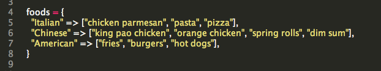
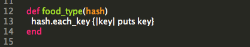
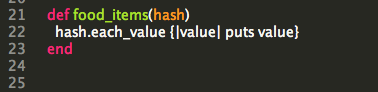

Hash Example
What is a Hash? It is a Ruby object that stores information in pair with a key=>value structure.
Here is an example of a Hash in Ruby.
line 4 is where we declare the Hash, named foods

To the left of the hash rocket, => symbol are the keys
To the right of the => symbol are the values. In this case, the values are actually stored in an [array].
Hash Methods
How would you display just the keys in a Ruby Hash?
On line 12 we define the method name and we want to pass the hash name over as an (argument)
We are interested in just the keys of the hash so we can use the each_key method to display just keys

How would you display just the values in a Ruby Hash?
Very similar concept, we define the method in line 21 with the hash name as the (argument)

Outcome of the Hash
We can call the function by simple typing the function name and passing the name of the hash we want to use: food_type(foods)
Because we are using puts, each key will be displayed in a separate link:
Italian
Chinese
American
----------------------------------------------------------
After we call the function to display just the values of the hashfood_items(foods)
Here is the output of values from our foods hash example
chicken parmesan
pasta
pizza
kung pao chicken
orange chicken
spring rolls
dim sum
fries
burgers
hot dogs